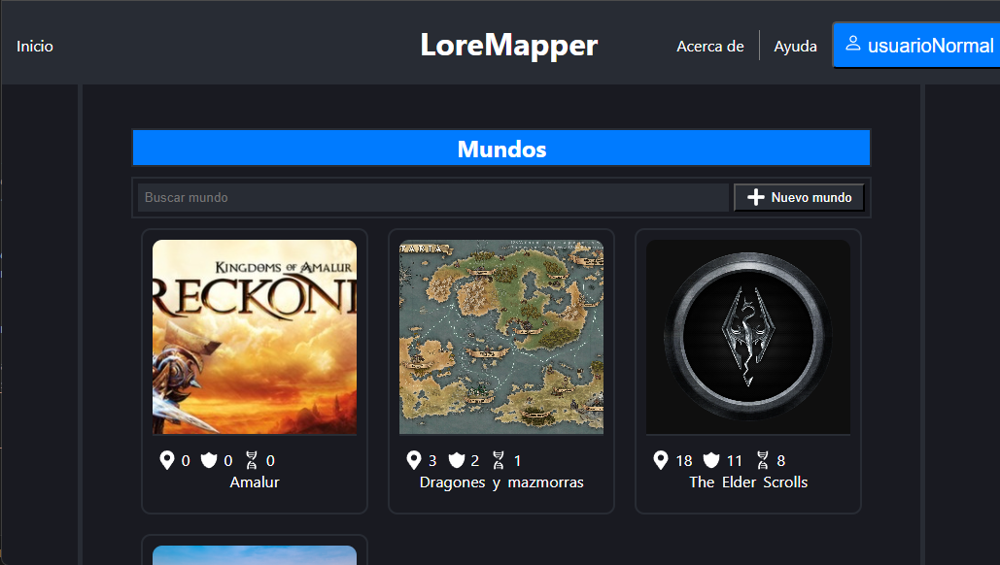

LoreMapper
Aplicación web desarrollada en React para la gestión y consulta de mapas. Permite organizar información estructurada y visualizar relaciones entre elementos.
Si el servidor no envía correos de verificación para nuevas cuentas se pueden usar las credenciales:
Usuario: usuarioNormal
Contraseña: usuarioNormal
Tecnologías: React, JavaScript, AWS Amplify

Ver proyecto
Inmobiliaria La Hontanilla
Sitio web corporativo desarrollado con las especificaciones del kit digital para una inmobiliaria. Diseño enfocado en claridad, navegación intuitiva y optimización SEO.
Tecnologías: WordPress